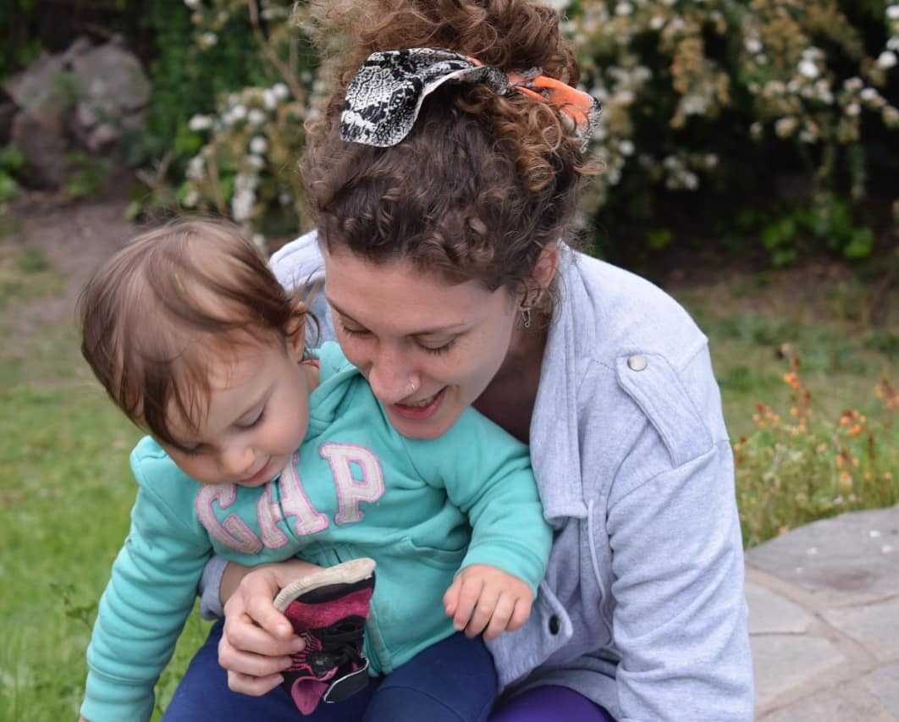
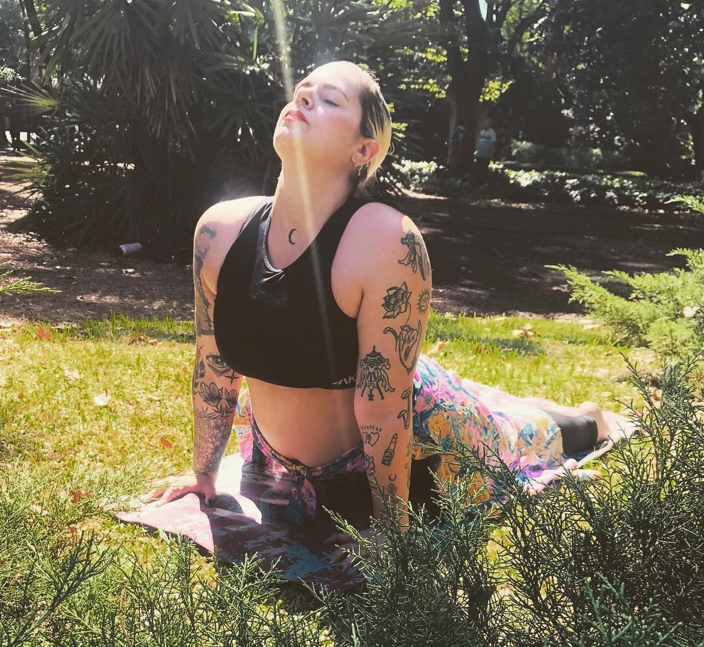

Con más de 12 años de experiencia en el mundo de yoga y otros 25 años en la alimentación consciente a base de plantas; Rasa Kirtan Dasi (Florencia) es co-fundadora de Gokulam y profe de las clases de hatha y ashtanga. Suele estar en el shala en su horario favorito que es la mañana. También es la encargada de la parte teórica, práctica y anatómica de la Formación y Profundización en Ashtnaga anual que se ofrece en nuestro estudio.

Akshaya Balaram Das es un practicante de Bhakti-yoga y co-fundador de Gokulam. Es el encargado de la parte filosófica y quién anima al desarrollo espiritual en nuestra formación FyPA. Comenzó su camino del yoga a través de hatha hace unos 12 años atrás. Ha practicado bajo la supervisión de Pablo Pirillo hasta la cuarentena. Pueden encontrarlo en los horarios de la tarde-noche.
Para nosotros, Karen es una de las profes más consciente en las clases dedicadas a la vivencia de ser mamá. Teniendo sus años de experiencia en el yoga, continúa formandose como profesional. En 2023 se unió al team Gokulam y se inscribió en el FyPA para comprender de lleno y actuar en consecuencia con los standares del estudio. Podés contactarte directamente con ella para conocerce y coordinar una clase de prueba. Contactar a Karen
Betina García es profe de las clases de vinyasa yoga en Gokulam. Sus propuestas se renuevan a cada clase, presentando un dinamismo completo que puede adaptarse completamente a cualquier necesidad y nivel. Utiliza elementos como música para recear un viaje completo. Podés contactarte directamente con ella para conocerce y coordinar una clase de prueba. Contactar a Betu
Si querés más información, envianos un mensaje a través de contacto